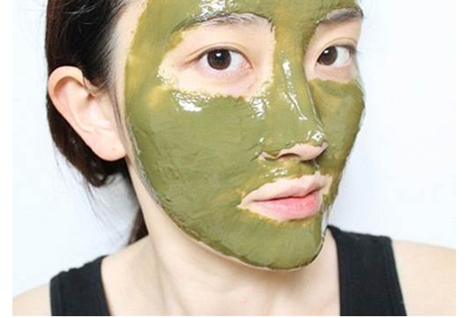
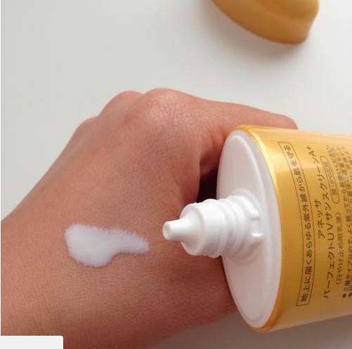
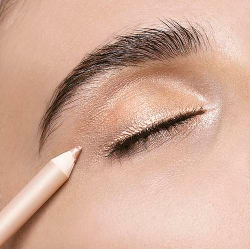
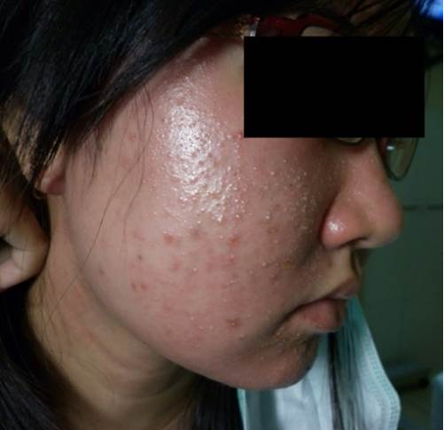

Là phụ nữ nhất định phải biết những mẹo làm đẹp từ A-Z như thế này để không phải hối tiếc về sauLà phụ nữ nhất định phải biết 12 mẹo làm đẹp từ A-Z như thế này để không phải hối tiếc về sau
1. Cân bằng “đầu tư”

Việc chăm sóc da là yếu tố hàng đầu giúp bạn có thể tự tin vào ngoại hình chính mình. Thay vì làm đẹp tạm thời, tức là dùng phấn, kem che khuyết điểm, lạm dụng make-up thì bạn hãy chú trọng vào việc nuôi dưỡng, cải thiện da từ sâu bên trong.Đơn giản nhất thì đối với con gái cũng cần có nước hoa hồng, kem chống nắng, sữa rửa mặt phù hợp với tính chất làn da. Hãy “đầu tư” vào sản phẩm dưỡng da hơn là trang điểm.
2. Không ra ngoài khi vừa bôi kem chống nắng

Kem chống nắng cực kì cần thiết, chúng giúp bạn bảo vệ da tránh khỏi tác động xấu từ tia UV. Cho dù da bạn hiện tại đang mịn màng, trắng đẹp mà khi ra nắng không che chắn, bôi kem cẩn thận thì chúng vẫn có thể nổi tàn nhang, sạm đen và rất nhanh lão hóa.Ngoài việc quan tâm đến chỉ số chống nắng, bạn cần phải chờ 20 – 30 phút sau khi bôi kem xong mới nên ra ngoài để dưỡng chất phát huy được khả năng bảo vệ.
3. Dùng chì kẻ mắt màu nude

Đây là “vũ khí” giúp bạn nhanh chóng khắc phục được đôi mắt mệt mỏi, quầng thâm. Khuôn mặt sẽ sáng lên mà không cần tốn quá nhiều thời gian trang điểm.4. Nhất định phải tẩy trang trước khi đi ngủ

Nếu bạn không tẩy trang trước khi đi ngủ, mụn sẽ “oanh tạc” ngay vào sáng hôm sau, không những vậy làn da còn phải chịu “sức ép” từ lớp phấn trang điểm quá lâu, khiến lỗ chân lông bị bít lại, tăng khả năng lão hóa, thêm vào đó là sự tích tụ vi khuẩn, bụi bẩn sẽ phá hủy collagen trên da.
Xin liên hệ ngay với Mỹ Phẩm Xách Tay Cao Cấp để biết thêm thông tin về giá cả sản phẩm:
Điện thoại: 0868 017117 ~ 0904 245355;
Facebook: Phạm Thị Minh Thi
Điện thoại: 0868 017117 ~ 0904 245355;
Facebook: Phạm Thị Minh Thi
- Quý khách nhận hàng mới thanh toán tiền;
- Giao hàng trực tiếp với Khách hàng tại Hà Nội;
- Khách hàng ở tỉnh khác chúng tôi sẽ chuyển phát nhanh theo đường bưu điện;
- Miễn phí toàn bộ cước vận chuyển đối với khách hàng mua lẻ trên toàn quốc.